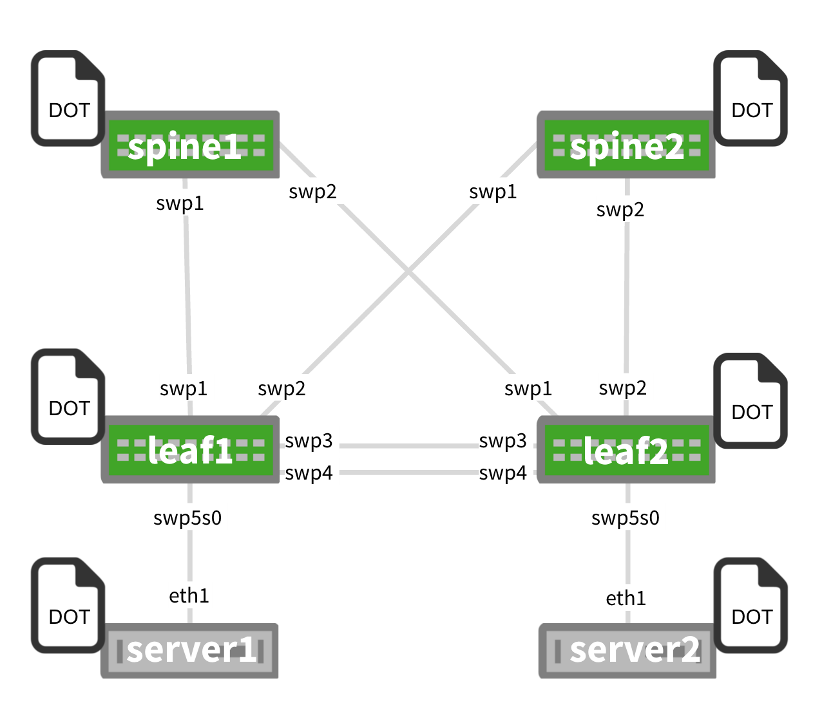

Prescriptive Topology Manager - PTM
In data center topologies, right cabling is a time-consuming endeavor and is error prone. Prescriptive Topology Manager (PTM) is a dynamic cabling verification tool to help detect and eliminate such errors. It takes a Graphviz-DOT specified network cabling plan (something many operators already generate), stored in a topology.dot file, and couples it with runtime information derived from LLDP to verify that the cabling matches the specification. The check is performed on every link transition on each node in the network.
You can customize the topology.dot file to control ptmd at both the global/network level and the node/port level.
PTM runs as a daemon, named ptmd.
For more information, see man ptmd(8).
Contents
Supported Features
-
Topology verification using LLDP. ptmd creates a client connection to the LLDP daemon, lldpd, and retrieves the neighbor relationship between the nodes/ports in the network and compares them against the prescribed topology specified in the topology.dot file.
-
Only physical interfaces, like swp1 or eth0, are currently supported. Cumulus Linux does not support specifying virtual interfaces like bonds or subinterfaces like eth0.200 in the topology file.
-
Forwarding path failure detection using Bidirectional Forwarding Detection (BFD); however, demand mode is not supported. For more information on how BFD operates in Cumulus Linux, read the Bidirectional Forwarding Detection - BFD chapter and read man ptmd(8).
-
Integration with Quagga (PTM to Quagga notification).
-
Client management: ptmd creates an abstract named socket /var/run/ptmd.socket on startup. Other applications can connect to this socket to receive notifications and send commands.
-
Event notifications: see Scripts below.
-
User configuration via a topology.dot file; see below.
Configuring PTM
ptmd verifies the physical network topology against a DOT-specified network graph file, /etc/ptm.d/topology.dot.
This file must be present or else ptmd will not start. You can specify an alternate file using the -c option.
PTM supports undirected graphs.
At startup, ptmd connects to lldpd, the LLDP daemon, over a Unix socket and retrieves the neighbor name and port information. It then compares the retrieved port information with the configuration information that it read from the topology file. If there is a match, then it is a PASS, else it is a FAIL.
PTM performs its LLDP neighbor check using the PortID ifname TLV information. Previously, it used the PortID port description TLV information.
Basic Topology Example
This is a basic example DOT file and its corresponding topology diagram. You should use the same topology.dot file on all switches, and don't split the file per device; this allows for easy automation by pushing/pulling the same exact file on each device!
graph G { "spine1":"swp1" -- "leaf1":"swp1"; "spine1":"swp2" -- "leaf2":"swp1"; "spine2":"swp1" -- "leaf1":"swp2"; "spine2":"swp2" -- "leaf2":"swp2"; "leaf1":"swp3" -- "leaf2":"swp3"; "leaf1":"swp4" -- "leaf2":"swp4"; "leaf1":"swp5s0" -- "server1":"eth1"; "leaf2":"swp5s0" -- "server2":"eth1";}
ptmd Scripts
ptmd executes scripts at /etc/ptm.d/if-topo-pass and /etc/ptm.d/if-topo-fail for each interface that goes through a change, running if-topo-pass when an LLDP or BFD check passes and running if-topo-fails when the check fails. The scripts receive an argument string that is the result of the ptmctl command, described in the ptmd commands section below.
You should modify these default scripts as needed.
Configuration Parameters
You can configure ptmd parameters in the topology file. The parameters are classified as host-only, global, per-port/node and templates.
Host-only Parameters
Host-only parameters apply to the entire host on which PTM is running. You can include the hostnametype host-only parameter, which specifies whether PTM should use only the host name (hostname) or the fully-qualified domain name (fqdn) while looking for the self-node in the graph file. For example, in the graph file below, PTM will ignore the FQDN and only look for switch04, since that is the host name of the switch it's running on:
It’s a good idea to always wrap the hostname in double quotes, like "www.example.com". Otherwise, ptmd can fail if you specify a fully-qualified domain name as the hostname and do not wrap it in double quotes.
Further, to avoid errors when starting the ptmd process, make sure that /etc/hosts and /etc/hostname both reflect the hostname you are using in the topology.dot file.
graph G { hostnametype="hostname" BFD="upMinTx=150,requiredMinRx=250" "cumulus":"swp44" -- "switch04.cumulusnetworks.com":"swp20" "cumulus":"swp46" -- "switch04.cumulusnetworks.com":"swp22"}However, in this next example, PTM will compare using the FQDN and look for switch05.cumulusnetworks.com, which is the FQDN of the switch it’s running on:
graph G { hostnametype="fqdn" "cumulus":"swp44" -- "switch05.cumulusnetworks.com":"swp20" "cumulus":"swp46" -- "switch05.cumulusnetworks.com":"swp22"}Global Parameters
Global parameters apply to every port listed in the topology file. There are two global parameters: LLDP and BFD. LLDP is enabled by default; if no keyword is present, default values are used for all ports. However, BFD is disabled if no keyword is present, unless there is a per-port override configured. For example:
graph G { LLDP="" BFD="upMinTx=150,requiredMinRx=250,afi=both" "cumulus":"swp44" -- "qct-ly2-04":"swp20" "cumulus":"swp46" -- "qct-ly2-04":"swp22"}Per-port Parameters
Per-port parameters provide finer-grained control at the port level. These parameters override any global or compiled defaults. For example:
graph G { LLDP="" BFD="upMinTx=300,requiredMinRx=100" "cumulus":"swp44" -- "qct-ly2-04":"swp20" [BFD="upMinTx=150,requiredMinRx=250,afi=both"] "cumulus":"swp46" -- "qct-ly2-04":"swp22"}Templates
Templates provide flexibility in choosing different parameter combinations and applying them to a given port. A template instructs ptmd to reference a named parameter string instead of a default one. There are two parameter strings ptmd supports:
-
bfdtmpl, which specifies a custom parameter tuple for BFD.
-
lldptmpl, which specifies a custom parameter tuple for LLDP.
For example:
graph G { LLDP="" BFD="upMinTx=300,requiredMinRx=100" BFD1="upMinTx=200,requiredMinRx=200" BFD2="upMinTx=100,requiredMinRx=300" LLDP1="match_type=ifname" LLDP2="match_type=portdescr" "cumulus":"swp44" -- "qct-ly2-04":"swp20" [BFD="bfdtmpl=BFD1", LLDP="lldptmpl=LLDP1"] "cumulus":"swp46" -- "qct-ly2-04":"swp22" [BFD="bfdtmpl=BFD2", LLDP="lldptmpl=LLDP2"] "cumulus":"swp46" -- "qct-ly2-04":"swp22"}In this template, LLDP1 and LLDP2 are templates for LLDP parameters while BFD1 and BFD2 are templates for BFD parameters.
Supported BFD and LLDP Parameters
ptmd supports the following BFD parameters:
-
upMinTx: the minimum transmit interval, which defaults to 300ms, specified in milliseconds.
-
requiredMinRx: the minimum interval between received BFD packets, which defaults to 300ms, specified in milliseconds.
-
detectMult: the detect multiplier, which defaults to 3, and can be any non-zero value.
-
afi: the address family to be supported for the edge. The address family must be one of the following:
-
v4: BFD sessions will be built for only IPv4 connected peer. This is the default value.
-
v6: BFD sessions will be built for only IPv6 connected peer.
-
both: BFD sessions will be built for both IPv4 and IPv6 connected peers.
-
The following is an example of a topology with BFD applied at the port level:
graph G { "cumulus-1":"swp44" -- "cumulus-2":"swp20" [BFD="upMinTx=300,requiredMinRx=100,afi=v6"] "cumulus-1":"swp46" -- "cumulus-2":"swp22" [BFD="detectMult=4"]}ptmd supports the following LLDP parameters:
-
match_type, which defaults to the interface name (ifname), but can accept a port description (portdescr) instead if you want lldpd to compare the topology against the port description instead of the interface name. You can set this parameter globally or at the per-port level.
-
match_hostname, which defaults to the host name (hostname), but enables PTM to match the topology using the fully-qualified domain name (fqdn) supplied by LLDP.
The following is an example of a topology with LLDP applied at the port level:
graph G { "cumulus-1":"swp44" -- "cumulus-2":"swp20" [LLDP="match_hostname=fqdn"] "cumulus-1":"swp46" -- "cumulus-2":"swp22" [LLDP="match_type=portdescr"]}When you specify match_hostname=fqdn, ptmd will match the entire FQDN, like cumulus-2.domain.com in the example below. If you do not specify anything for match_hostname, ptmd will match based on hostname only, like cumulus-3 below, and ignore the rest of the URL:
graph G { "cumulus-1":"swp44" -- "cumulus-2.domain.com":"swp20" [LLDP="match_hostname=fqdn"] "cumulus-1":"swp46" -- "cumulus-3":"swp22" [LLDP="match_type=portdescr"] }Bidirectional Forwarding Detection (BFD)
BFD provides low overhead and rapid detection of failures in the paths between two network devices. It provides a unified mechanism for link detection over all media and protocol layers. Use BFD to detect failures for IPv4 and IPv6 single or multihop paths between any two network devices, including unidirectional path failure detection. For information about configuring BFD using PTM, see the BFD chapter.
Checking Link State with Quagga
The Quagga routing suite enables additional checks to ensure that routing adjacencies are formed only on links that have connectivity conformant to the specification, as determined by ptmd.
You only need to do this to check link state; you don't need to enable PTM to determine BFD status.
The check is enabled by default. Every interface has an implied ptm-enable line in the configuration stanza in the interfaces file.
To disable the checks, delete the ptm-enable parameter from the interface. For example:
cumulus@switch:~$ net del interface swp51 ptm-enable cumulus@switch:~$ net pendingcumulus@switch:~$ net commitIf you need to re-enable PTM for that interface, run:
cumulus@switch:~$ net add interface swp51 ptm-enable cumulus@switch:~$ net pendingcumulus@switch:~$ net commitWith PTM enabled on an interface, the zebra daemon connects to ptmd over a Unix socket. Any time there is a change of status for an interface, ptmd sends notifications to zebra. Zebra maintains a ptm-status flag per interface and evaluates routing adjacency based on this flag. To check the per-interface ptm-status:
cumulus@switch:~$ net show interface swp1Interface swp1 is up, line protocol is up Link ups: 0 last: (never) Link downs: 0 last: (never) PTM status: disabled vrf: Default-IP-Routing-Table index 3 metric 0 mtu 1550 flags: <UP,BROADCAST,RUNNING,MULTICAST> HWaddr: c4:54:44:bd:01:41Using ptmd Service Commands
PTM sends client notifications in CSV format.
cumulus@switch:~$ sudo systemctl start|restart|force-reload ptmd.service: Starts or restarts the ptmd service. The topology.dot file must be present in order for the service to start.
cumulus@switch:~$ sudo systemctl reload ptmd.service: Instructs ptmd to read the topology.dot file again without restarting, applying the new configuration to the running state.
cumulus@switch:~$ sudo systemctl stop ptmd.service: Stops the ptmd service.
cumulus@switch:~$ sudo systemctl status ptmd.service: Retrieves the current running state of ptmd.
Using ptmctl Commands
ptmctl is a client of ptmd; it retrieves the operational state of the ports configured on the switch and information about BFD sessions from ptmd. ptmctl parses the CSV notifications sent by ptmd.
See man ptmctl for more information.
ptmctl Examples
For basic output, use ptmctl without any options:
cumulus@switch:~$ sudo ptmctl-------------------------------------------------------------port cbl BFD BFD BFD BFD status status peer local type -------------------------------------------------------------swp1 pass pass 11.0.0.2 N/A singlehop swp2 pass N/A N/A N/A N/A swp3 pass N/A N/A N/A N/A For more detailed output, use the -d option:
cumulus@switch:~$ sudo ptmctl -d---------------------------------------------------------------------------------------------------------------------------------------------------------------------------------------port cbl exp act sysname portID portDescr match last BFD BFD BFD BFD det_mult tx_timeout rx_timeout echo_tx_timeout echo_rx_timeout max_hop_cnt status nbr nbr on upd Type state peer DownDiag---------------------------------------------------------------------------------------------------------------------------------------------------------------------------------------swp45 pass h1:swp1 h1:swp1 h1 swp1 swp1 IfName 5m: 5s N/A N/A N/A N/A N/A N/A N/A N/A N/A N/Aswp46 fail h2:swp1 h2:swp1 h2 swp1 swp1 IfName 5m: 5s N/A N/A N/A N/A N/A N/A N/A N/A N/A N/ATo return information on active BFD sessions ptmd is tracking, use the -b option:
cumulus@switch:~$ sudo ptmctl -b----------------------------------------------------------port peer state local type diag ----------------------------------------------------------swp1 11.0.0.2 Up N/A singlehop N/A N/A 12.12.12.1 Up 12.12.12.4 multihop N/A To return LLDP information, use the -l option. It returns only the active neighbors currently being tracked by ptmd.
cumulus@switch:~$ sudo ptmctl -l---------------------------------------------port sysname portID port match last descr on upd---------------------------------------------swp45 h1 swp1 swp1 IfName 5m:59sswp46 h2 swp1 swp1 IfName 5m:59s To return detailed information on active BFD sessions ptmd is tracking, use the -b and -d options (results are for an IPv6-connected peer):
cumulus@switch:~$ sudo ptmctl -b -d-------------------------------------------------------------------------------------------------------------------------------------------------------------port peer state local type diag det tx_timeout rx_timeout echo echo max rx_ctrl tx_ctrl rx_echo tx_echo mult tx_timeout rx_timeout hop_cnt -------------------------------------------------------------------------------------------------------------------------------------------------------------swp1 fe80::202:ff:fe00:1 Up N/A singlehop N/A 3 300 900 0 0 N/A 187172 185986 0 0 swp1 3101:abc:bcad::2 Up N/A singlehop N/A 3 300 900 0 0 N/A 501 533 0 0 ptmctl Error Outputs
If there are errors in the topology file or there isn’t a session, PTM will return appropriate outputs. Typical error strings are:
Topology file error [/etc/ptm.d/topology.dot] [cannot find node cumulus] -please check /var/log/ptmd.log for more infoTopology file error [/etc/ptm.d/topology.dot] [cannot open file (errno 2)] -please check /var/log/ptmd.log for more infoNo Hostname/MgmtIP found [Check LLDPD daemon status] -please check /var/log/ptmd.log for more infoNo BFD sessions . Check connectionsNo LLDP ports detected. Check connectionsUnsupported commandFor example:
cumulus@switch:~$ sudo ptmctl-------------------------------------------------------------------------cmd error-------------------------------------------------------------------------get-status Topology file error [/etc/ptm.d/topology.dot] [cannot open file (errno 2)] - please check /var/log/ptmd.log for more infoIf you encounter errors with the topology.dot file, you can use dot (included in the Graphviz package) to validate the syntax of the topology file.
By simply opening the topology file with Graphviz, you can ensure that it is readable and that the file format is correct.
If you edit topology.dot file from a Windows system, be sure to double check the file formatting; there may be extra characters that keep the graph from working correctly.
Caveats and Errata
-
Prior to version 2.1, Cumulus Linux stored the ptmd configuration files in /etc/cumulus/ptm.d. When you upgrade to version 2.1 or later, all the existing ptmd files are copied from their original location to /etc/ptm.d with a dpkg-old extension, except for topology.dot, which gets copied to /etc/ptm.d.
If you customized the if-topo-pass and if-topo-fail scripts, they are also copied to dpkg-old, and you must modify them so they can parse the CSV output correctly.
Sample if-topo-pass and if-topo-fail scripts are available in /etc/ptm.d. A sample topology.dot file is available in /usr/share/doc/ptmd/examples.